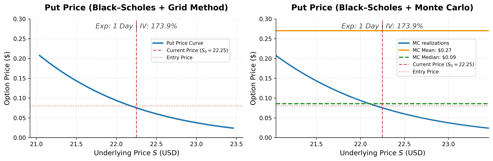
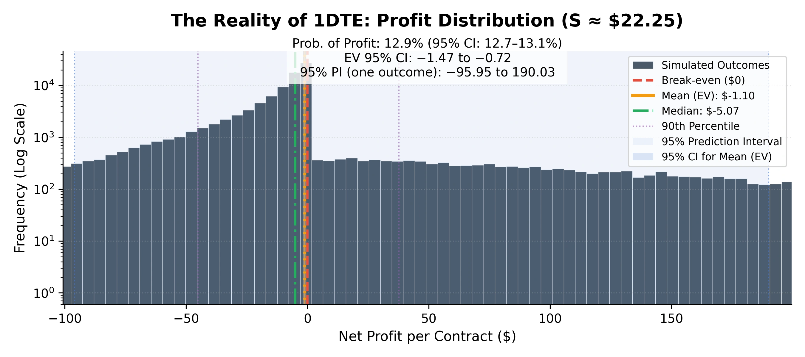
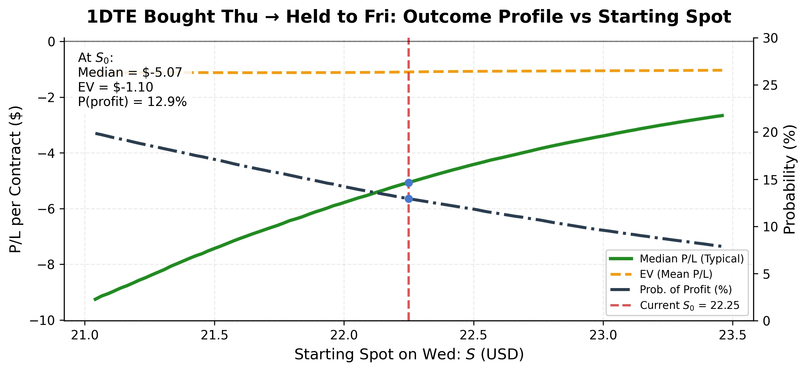
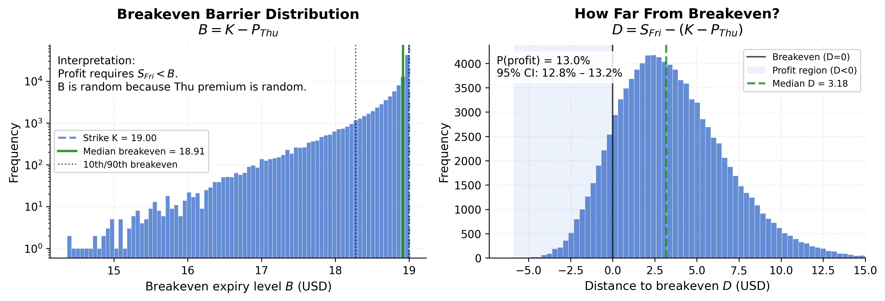

Sajal Gupta
Almost Dr. Astrophysicist

From Panic Trade to Math: Choosing a 1DTE Put with Risk Aversion
September 2025 was one of those weeks where everything in quantum stocks seemed to go up just because it could. D-Wave Quantum Inc (sticker: QBTS) had been ripping for days, gaining \(\sim 40\% \) in just first two weeks of September. It's implied volatility on 17th of the month was through the roof \(\sim 174 \% \) implying huge expected moves. So, like many other traders (or degenerates as redditors like to call us), I did what a lot of them do when a chart feels overextended: I decided to buy a 1DTE put on Thursday (Sep 18), convinced a pullback was imminent.
This post is the story of how that impulse turned into a small notebook experiment. To rewind a bit: I was taking a class called Computer Science: Optimization and Learning—right at the part where you learn about utility, risk aversion, and how maximizing expected profit isn’t the same thing as making a good decision under uncertainty.
So I asked myself a question that felt both honest and salvageable at that time: If I’m going to take a dumb short-term options bet, can I at least choose a less-dumb entry price—using risk-aversion theory instead of vibes? The expiration for the nearest put options was in two days, so I thought: If I buy a fresh 1DTE put tomorrow (Thursday) and hold it to Friday expiry, what does the full distribution of outcomes look like?
The reason I asked this question was because the option prices for out-of-money \(10-15 \% \) put strikes were dirt cheap making me wonnder if the market was mispricing the potential drop, or if I was simply falling for the 'cheap' premium trap of an efficiently priced, high-theta graveyard.
Here, the trade I cared about was:
- Wed → Thu: Simulate tomorrow’s spot price \( S_{\text{Thu}} \).
- Thu entry: Buy a fresh 1DTE put at a model premium \( P_{\text{Thu}}(S_{\text{Thu}}, \tau = 1\,\text{day}) \).
- Thu → Fri: Simulate expiry spot \( S_{\text{Fri}} \).
- Fri payoff: \( \max(K - S_{\text{Fri}}, 0) \).
- P/L: \( 100 \cdot (\text{payoff} - P_{\text{Thu}}) \).
That’s the buy tomorrow, hold to Friday reality. Before I go further, I would like to add a screaming disclaimer:
This is an educational post and a personal experiment, not financial advice. Please do your own research and consult a financial advisor before making any (stupid)investment decisions.
Step 1: Simulate Thursday's spot price (because tomorrow matters)
Over a single day, drift is basically irrelevant compared to volatility—especially in a high-IV situation. So I modeled spot moves with a one-step lognormal process (a vanilla GBM step), anchored at:
- Current spot: \( S_0 \approx 22.25 \)
- Implied vol (IV): \( \sigma \approx 173.9\% \) annualized
- Horizon: 1 trading day (and then another day to expiry)

Figure 1 is intentionally not a profit chart. It’s an entry chart: if I wait until Thursday, what is a reasonable range of premiums I might pay for a 1DTE put? Here, left panel shows the Black–Scholes 1DTE price curve vs spot (a clean baseline) and the right panel shows Monte Carlo scatter of simulated \( (S_{\text{Thu}}, P_{\text{Thu}}) \) pairs.
Figure 1 shows the a cloud of possible \( (S_{\text{Thu}}, P_{\text{Thu}}) \) pairs. The big takeaway is the slope: near the current price, the curve is steep. Small spot changes can move the premium a lot. I expected that as near-term options are sensitive to spot, but seeing it visually made the trade-off clear. It also made the entry price feel like a non-trivial decision.
Step 2: Convert stock paths into option outcomes
A put is not a pure directional bet. It’s direction + convexity + (very important for 1DTE) time value. So for each simulated Thursday spot \(S_{\text{Thu}}\), I computed the Thursday entry premium for a fresh 1DTE put using Black–Scholes:
So for each simulated Thursday spot \( S_{\text{Thu}} \), I computed the Thursday entry premium for a fresh 1DTE put using Black–Scholes:
\[ P_{\text{Thu}} = \text{BS}_{\text{put}}(S_{\text{Thu}}, K, \tau = 1\,\text{day}, \sigma) \]
Then I simulated Friday’s spot and computed the expiry payoff:
\[ \text{payoff}_{\text{Fri}} = \max(K - S_{\text{Fri}}, 0) \]
Finally, profit per contract:
\[ \Pi = 100 \cdot (\text{payoff}_{\text{Fri}} - P_{\text{Thu}}) \]
Now we have a full distribution of possible profits per contract \((\Pi)\) depending on what price \(P_{\text{Thu}}\) we pay tomorrow. I computed entry thresholds based on quantiles, for instance, if you want a 70% probability of profit, you need \(p\) below roughly the 30th percentile of the simulated profit distribution. It’s basically VaR thinking in plain clothes, choose a price so that bad outcomes are sufficiently unlikely.

Figure 2 plots the histogram of profit per contract around the current spot.
Figure 2 shows the histogram of profit per contract around the current spot. The distribution is heavily skewed: the mean net profit comes out negative (around \(-\$ 1\)/contract), while the median net profit is \(\approx - \$ 5\)/contract with profit's probability is \(\approx 13 \%\). This is the lottery shape of short-dated options: the mean is pulled around by rare tail events, while the median describes what we feel most of the time.
This asymmetrical distribution was the first signal that the trade might not be as good as I hoped before. What surprised me was that how bad it actually looked when I modeled it. Of course, market prices are the ultimate arbiter, but seeing the full distribution made me question all my vibe trades I did in the past.
Step 3: Map the trade’s profile across different starting prices
Because the option premium was dirt cheap, I was still reluctant to not trade at all. I thought what if I buy at different entry price, i.e. How does this strategy behave if the starting spot is different?
So I repeated the same two-day simulation across a grid of possible starting prices \(S\). For each \(S\), I recomputed:
\( \bullet \) EV (mean) of profit
\( \bullet \) Median profit
\( \bullet \) Probability of profit

Figure 3: The 1DTE Profitability Gap. A comparison of Expected Value (EV), Median P/L, and Win Probability across a range of spot prices. Note how the typical Outcome (Median) sits consistently below the expected value (EV), illustrating why 1DTE puts often expire worthless even when the directional thesis feels correct.
Figure 3 reveals the stark asymmetry of outcomes that defines 1DTE options. While the Expected Value (EV) might suggest an (almost) break-even, the Median P/L (the green dashed line) tells the reality: the typical outcome for this trade is a net loss. This discrepancy is driven by the distribution's heavy right tail—rare, explosive gains that pull the EV up but occur too infrequently to benefit the average trader.
Furthermore, the Probability of Profit (dotted line) remains stubbornly low at current price levels, confirming that even if trade goes my way, the rapid decay of the \( \$ 0.08 \) premium creates a high hurdle that the underlying stock must clear just to reach break-even. In short, this is not a high-probability win, but a lottery ticket bet where the cost of being wrong is certain, and the cost of being right is expensive.
Step 4: Turn breakeven into something visual (because entry premium is random)
Most people treat breakeven as a single number, and it generally is if you are already in the trade. But here, I was not. I was planning to buy tomorrow, and because tomorrow’s premium was uncertain, the breakeven itself becomes a distribution.
For any given path, you profit if:
\[ \max(K - S_{\text{Fri}}, 0) > P_{\text{Thu}} \]
That is equivalent to:
\[ S_{\text{Fri}} < K - P_{\text{Thu}} \]
Define the breakeven barrier:
\[ B = K - P_{\text{Thu}} \]
Because \( P_{\text{Thu}} \) is random, \( B \) is random too.

Figure 4: The Dynamic Breakeven Barrier. The left panel illustrates the distribution of the breakeven barrier \( B \), showing how much the stock must drop just to cover your entry cost. The right panel tracks the Distance to Breakeven (\( D \)), where only the area to the left of zero represents a profitable trade.
Figure 4 reframes the trade from a static bet into a dynamic race against a moving hurdle. The left panel shows that the Breakeven Barrier isn't a single price point, but a range of possibilities you must clear to offset the cost of the contract.
The right panel shows the Distance to Breakeven, which is the ultimate reality check. Profit only occurs when this distance is negative (\( D < 0 \)). This visualization explains why 1DTE puts often feel like a trap: it isn't enough for the stock to "just" move in my direction. I was fighting against a hurdle that is itself determined by the market's expectations, leaving me with a narrow window for success that requires the stock to move further and faster than the premium I would've paid initially implies.
What I learned
A 1DTE put is an entry-price problem disguised as a prediction problem. The Probability of Profit is usually low for far OTM 1DTE puts unless the premium is extremely cheap or the underlying is truly explosive.
Median beats mean for emotional realism. The median tells you what you will actually experience most of the time, not some theoretical average driven by a few lucky outliers.
Breakeven is path-dependent when you enter tomorrow. Because the premium you pay is uncertain, the hurdle you must clear is uncertain too.
Closing thought
If you have ever panic-clicked a 1DTE option because the chart felt wrong, here is the question I wish I asked sooner:
What distribution am I paying for and does that distribution match my risk tolerance?
If not, the best trade might be the simplest one: do not buy a lottery ticket when what you really want is a savings bond.
Adios, keep trading, and keep making dumb decisions!